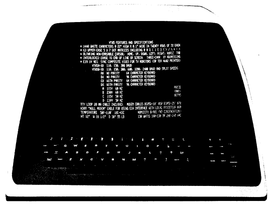

| Chapter 1 | Contents | Chapter 3 |
Basically, the VT05 system consists of a keyboard, CRT display, transmit/receive logic, control logic, main memory, character generator/ROM and power supply (see Figure 1-2).
The keyboard transmits an ASCII code directly to the computer each time a key is depressed, and the computer, in turn, transmits the character code to the VT05 control logic. The control logic determines if the received data is to be displayed or used to control the displayed text format. The information or data is sequentially read out of the main memory and applied to the character generator read-only memory (ROM), where the character codes are converted to a 5 × 7 dot matrix and are subsequently displayed as a character. The VT05 continually refreshes the information displayed on the CRT at a constant 50 or 60 Hz rate.
The basic function of the keyboard (see Figure 2-1) is to provide a convenient, on-line means of transmitting U.S. ASCII characters to the processor to be processed and displayed on the VT05 CRT display.
|  |
The VT05 display allows direct viewing of all displayable characters contained in the VT05 character set that are transmitted from and/or received by the VT05. The display module is a raster-type (television) display of characters as well as video pictures that originate from a closed-circuit television source. CRT inputs that are applied to the read-only memory and used for character generation are derived through the control logic. External video signals are input via a BNC connector located on the rear panel of the VT05. Displayed text is constantly refreshed by the VT05 recirculating memory.
The VT05 can display up to 20 character lines, 72 characters per line, or a maximum of 1440 characters, full-screen. A line feed with the cursor in the bottom line (line 20) will cause the display to "scroll" or move each line up one line position, the top line (previously line 1) will scroll off the display area, and the text contained within that line will be erased from the display refresh memory. A blinking cursor is used to indicate the position of the next character to be generated. The cursor can be moved up, down, left, or right through the use of various control characters; it also moves to the right automatically as it receives each new character.
The basic function of the VT05 transmit/receive logic is to provide parallel-to-serial (output) and serial-to-parallel (input) conversion, special character decoding, and input/output synchronization.
The VT05 control logic provides overall system control, basic timing, and monitoring of input data for control functions such as carriage return, line feed, backspace, move cursor, etc.
The VT05 memory consists of several MOS dynamic shift registers that are organized bit-parallel and character-serial. Memory capacity is 9816 bits. The function of the recirculating memory is to store received data and to continually refresh the VT05 CRT display by addressing the character generator/ROM.
The read-only memory/character generator has a 2240-bit capacity and is capable of generating any of the VT05 displayable ASCII characters. Character codes are continuously received by the ROM from the recirculating memory; the ROM then converts each code into a 5 × 7 dot matrix that is output to be displayed as a character on the CRT display screen. Any lower case codes that are received will be converted to upper case, stored, and then displayed by the terminal as upper case characters. The DEL (rubout) 1778 code is ignored and no visual indication occurs on the display when this code is received. The complete VT05 displayed character set consists of 26 upper case alphabetical characters, 10 numerals, and 27 symbols as listed in Table 1-3.
At speeds above 300 baud, filler characters (or time delay) are required after many of the control characters transmitted to a VT05-B.
Characters Requiring Fillers Above 300 Baud:
Filler characters should be null (0000000) as a rule, though other characters may be satisfactory if direct cursor addressing is not used. (Fillers after Cursor Y Address must be null to be interpreted correctly.)
Delay required is slightly greater than one full cycle of the AC line. At both 50 Hz and 60 Hz, the number of fillers required to accomplish this is:
| 2400 baud | 4 | |
| 1200 baud | 2 | |
| 600 baud | 1 | |
| 300 baud | or less | none required |